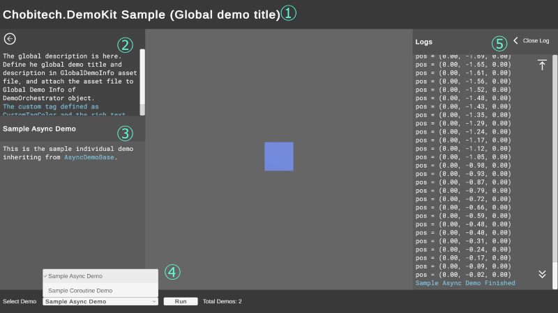
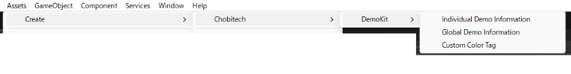
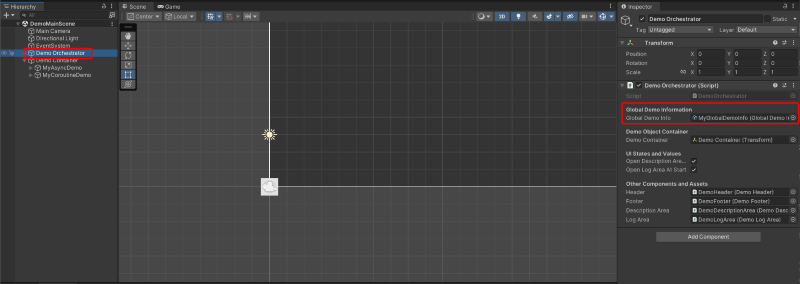
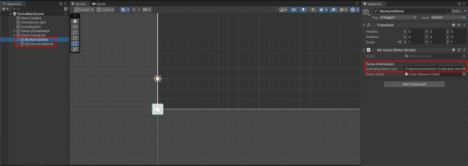

Getting Started


This guide will help you set up Chobitech.DemoKit and create your first demo.
Prerequisites
- Unity 2022.3 or later
- TextMeshPro installed
Installation
- Import From Asset Store: Add Chobitech.DemoKit to
My Assetand import to your project.
Quick Start (Using Samples)
The fastest way to understand Chobitech.DemoKit is to use the provided sample.
- Open [Package Manager].
- Select Chobitech.DemoKit in the installed packages.
- Select "Samples" tab, and click "Import".
- Open the imported scene DemoMainScene and run the scene to check the operation.
Callouts of DemoMainScene

- Global Title: Displays the name of the overall demo project.
- Global Description: Provides a general overview and instructions for the entire demo toolkit.
- Individual Demo Info: Shows the title and specific details of the currently selected individual demo. The side panel containing both Global and Individual descriptions can be toggled via the icon button in the top-left corner.
- Demo Controller: Contains the dropdown for selecting demos and the Run/Stop toggle button.
- Log Console: Displays real-time logs and execution status for the active demo. This panel can be toggled via the "Open/Close Log" button in the top-right corner.
Your First Custom Demo
Follow these steps to integrate your own logic:
Copy DemoMainScene
Copy the scene file DemoMainScene from the package to your own project folder.
Caution
To ensure stability, do not edit the preset objects (Orchestrator, Header, Footer, etc.) within the original package scene. Always work on a copied version in your local directory.
Choose Your Base Class
Chobitech.DemoKit supports two distinct coding styles. Create a new script and inherit from the class that fits your needs:
AsyncDemoBase: For modernasync/awaitlogic withCancellationTokensupport.CoroutineDemoBase: For traditional UnityIEnumeratorworkflows.
Implement Demo Logic
For Async (
AsyncDemoBase): OverrideDemoProcessAsyncto implement your logic.using System.Threading; using System.Threading.Tasks; using UnityEngine; using Chobitech.DemoKit; public class MyAsyncDemo : AsyncDemoBase { [SerializeField] private SampleCube _demoCube; public override async Task DemoProcessAsync(CancellationToken token) { // Start logging with a custom color tag defined in GlobalDemoInfo AddLogLnWithColorTag("notice", $"Start {DemoName}"); var elapsedTime = 0f; var durationSec = 2f; var initPos = _demoCube.SelfTransform.localPosition; while (elapsedTime < durationSec) { // IMPORTANT: Check for cancellation to handle the Stop button token.ThrowIfCancellationRequested(); var rate = elapsedTime / durationSec; var y = 2f * Mathf.Sin(Mathf.PI * rate * 2); var pos = new Vector3(initPos.x, y, initPos.z); AddLogLn($"pos = {pos}"); _demoCube.SelfTransform.localPosition = pos; elapsedTime += Time.deltaTime; await Task.Yield(); } token.ThrowIfCancellationRequested(); _demoCube.SelfTransform.localPosition = initPos; AddLogLnWithColorTag("notice", $"{DemoName} Finished"); } }For Coroutine (
CoroutineDemoBase): OverrideDemoRoutinefor standard coroutine behavior.using System.Collections; using Chobitech.DemoKit; using UnityEngine; public class MyCoroutineDemo : CoroutineDemoBase { [SerializeField] private SampleCube _demoCube; public override IEnumerator DemoRoutine() { AddLogLnWithColorTag("warning", $"Start {DemoName}"); var initPos = _demoCube.SelfTransform.localPosition; var durationSec = 2f; var elapsedTime = 0f; while (elapsedTime < durationSec) { var rate = elapsedTime / durationSec; var x = 2f * Mathf.Sin(Mathf.PI * rate * 2); var pos = new Vector3(x, initPos.y, initPos.z); AddLogLn($"pos = {pos}"); _demoCube.SelfTransform.localPosition = pos; elapsedTime += Time.deltaTime; yield return null; } _demoCube.SelfTransform.localPosition = initPos; AddLogLnWithColorTag("warning", $"{DemoName} Finished"); } }Tip
Lifecycle Hooks: You can override
OnDemoCompleted()for success actions, orOnDemoCanceled()to handle cleanup when a demo is stopped by the user.Note
About
SampleCube: The following examples use a utility classSampleCubefor movement. For details on its implementation (likeMaterialPropertyBlockusage), please refer to the script in the Samples folder.Generate Metadata
Create the metadata assets via [Assets] > [Create] > [Chobitech] > [DemoKit].

GlobalDemoInfo: Holds project-wide settings (Title, Icon, Color Tags).IndividualDemoInfo: Holds specific info (Name, Description) for each demo.
Placement and Connection
Attach
GlobalDemoInfo: Select Demo Orchestrator in your copied scene and assign yourGlobalDemoInfoasset.
Place Demo Object: Create an empty
GameObjectas a child of Demo Container and attach your custom demo script.
Attach
IndividualDemoInfo: In your demo object's Inspector, assign theIndividualDemoInfoasset.
Run the Demo
Launch the scene, select your demo from the dropdown, and press "Run". The Demo Orchestrator automatically detects your script and manages its lifecycle.